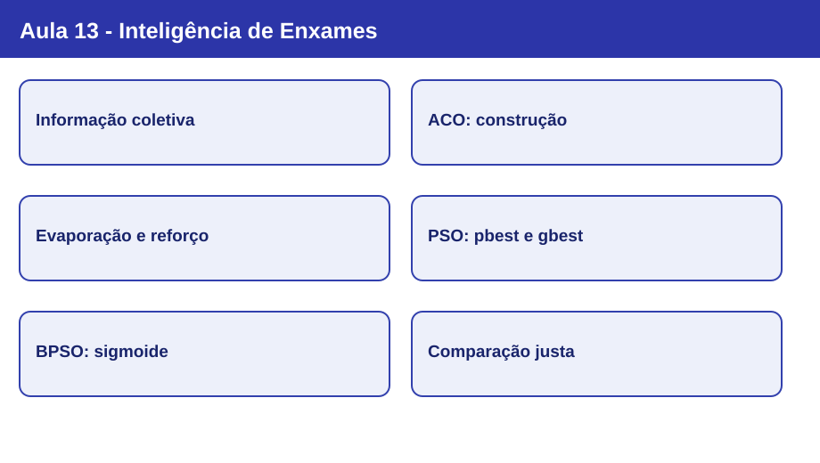

Nota visual 13 - Inteligência de Enxames

Mapa conceitual
flowchart LR
A["Problema e função objetivo"] --> B{"Representação"}
B --> C["ACO: construção por escolhas"]
B --> D["PSO: partículas e velocidades"]
C --> E["Feromônio + informação heurística"]
E --> F["Amostragem de alternativas admissíveis"]
F --> G["Avaliar e atualizar trilhas"]
G --> C
D --> H["pbest e gbest"]
H --> I["Atualizar velocidade e posição"]
I --> J["Avaliar e atualizar memórias"]
J --> D
G --> K["Comparar qualidade por avaliações"]
J --> K
classDef base fill:#e9eafb,stroke:#2435a0,color:#17215e;
classDef aco fill:#fff0d7,stroke:#ad7321,color:#71460c;
classDef pso fill:#e1f2f0,stroke:#20766c,color:#12463f;
class A,B,K base;
class C,E,F,G aco;
class D,H,I,J pso;
Conceitos em sequência
- Inteligência coletiva: regras locais e troca explícita ou implícita de informações podem produzir comportamento global coordenado. Inspiração biológica não é reprodução fiel da natureza nem garantia de ótimo.
- ACO: cada formiga constrói uma solução; feromônios registram experiência coletiva. No TSP, as escolhas incidem sobre cidades ainda admissíveis e podem usar informação heurística de distância.
- Transição probabilística: a chance de escolher uma aresta admissível é proporcional a
τ^α η^β. Feromônio e heurística têm influências distintas; a próxima cidade é amostrada, não necessariamente a mais provável. - Evaporação e reforço: o Ant System reduz todas as trilhas por
(1 − ρ)e depositaQ/Lnas utilizadas pelas formigas. Evaporação e reforço ajustam a memória coletiva; não impedem sozinhos estagnação. - PSO: partículas têm posições e velocidades; a atualização combina inércia, atração pelo melhor individual (
pbest) e pelo melhor coletivo (gbest). O PSO clássico opera naturalmente com variáveis contínuas. - Adaptação binária e avaliação: para a imagem de 16 bits, ACO usa feromônios para duas escolhas por bit e BPSO transforma velocidades reais em probabilidades por sigmoide. A comparação exige o mesmo alvo, a mesma função objetivo e orçamento equivalente de avaliações.
ACO no TSP: regra de decisão
Com η_ij = 1/d_ij para distâncias positivas e conjunto de cidades admissíveis N_i, a probabilidade de transição é:
P(i → j) = [τ_ij^α · η_ij^β] / Σ[k em N_i] [τ_ik^α · η_ik^β]
No exemplo da aula, os pesos são 0,25 (B), 0,125 (C) e 0,04 (D); a soma é 0,415. As probabilidades são aproximadamente 60,24%, 30,12% e 9,64%. Com sorteio r = 0,75 e ordem B, C, D, a cidade sorteada é C, embora B seja a mais provável.
No Ant System apresentado, as rotas são construídas e avaliadas antes da atualização dos feromônios. Para cada aresta:
τ_ij ← (1 − ρ) τ_ij + Σ[formigas que usaram (i,j)] Q / L_k
PSO: movimento guiado por memória
v_i ← w · v_i + c₁ · r₁ · (pbest_i − x_i) + c₂ · r₂ · (gbest_i − x_i)
x_i ← x_i + v_i (PSO contínuo)
- Inércia (
w): mantém influência da velocidade anterior. - Componente cognitiva (
c₁): atração pelo melhor resultado da própria partícula. - Componente social (
c₂): atração pelo melhor resultado compartilhado. - Aleatoriedade (
r₁,r₂): modula a atualização.
Na adaptação BPSO, não se utiliza a atualização contínua x ← x + v para os bits. Em vez disso, a velocidade determina a probabilidade de bit 1:
S(v) = 1 / (1 + exp(−v))
x_i = 1 se u < S(v_i), senão 0; u ~ U(0,1)
Quando v = 0, a probabilidade é 50%; velocidades positivas elevam a probabilidade de 1 e negativas a reduzem.
Comparação: mesmo problema, mecanismos diferentes
| Aspecto | AG | ACO | PSO / BPSO |
|---|---|---|---|
| Informação compartilhada | Indivíduos selecionados como pais | Feromônios das escolhas realizadas | Melhores posições individuais e coletivas |
| Geração de candidatos | Crossover e mutação | Construção probabilística | Atualização de velocidade e posição |
| Representação na prática | Cromossomo binário de 16 bits | Duas trilhas por pixel (0 e 1) | Posição binária e velocidade real |
| Risco relevante | Perda de diversidade | Estagnação por reforço excessivo | Convergência prematura e sensibilidade aos parâmetros |
Observação: o ACO binário da prática usa apenas feromônio por bit, sem o termo de distância do TSP. Sua avaliação é global: um candidato com fitness 14 reforça todas as escolhas que fez, inclusive eventuais bits incorretos. Não há identificação individual de quais pixels receberam acerto.
Revisão de 30 segundos
ACO compartilha preferências por feromônios e constrói soluções por amostragem; PSO move candidatos conforme inércia, memória própria e informação social. Ambos exigem representação compatível, parâmetros controlados e avaliação cuidadosa.
Erros conceituais frequentes
- Afirmar que ACO sempre escolhe a aresta de maior probabilidade.
- Confundir
ρ(fração evaporada) com fator de retenção. - Supor que o reforço de ACO binário identifica quais bits estão corretos.
- Interpretar velocidade no BPSO como deslocamento geométrico de um bit.
- Comparar métodos apenas por número de iterações, ignorando avaliações do fitness.
- Inferir superioridade geral a partir de uma execução em um problema de 16 bits.
Revisão de 1 minuto
Explique uma escolha de rota em ACO, a evaporação seguida de depósito e a diferença entre pbest e gbest. Em seguida, descreva por que a prática converte PSO em BPSO para usar exatamente a representação binária da Aula 12.
Checklist
- [ ] Diferencio inteligência de enxames e operadores de AG.
- [ ] Calculo uma probabilidade de transição com feromônio e heurística.
- [ ] Aplico evaporação e soma de depósitos de feromônio.
- [ ] Identifico os papéis de
w,c₁,c₂,pbestegbest. - [ ] Explico o papel da sigmoide na atualização binária.
- [ ] Distingo comparação por avaliações de comparação por iterações.
- [ ] Consigo relacionar AG, ACO e BPSO ao Trabalho 02 sem reutilizar operadores incompatíveis.
Estudo guiado · Slides da Aula 13 · Código-base da prática com TODOs
Próxima conexão: aprofundar as decisões de representação e avaliação de AG, ACO e PSO no Trabalho 02; notas e estudos guiados não fornecem as soluções dos checkpoints de código.